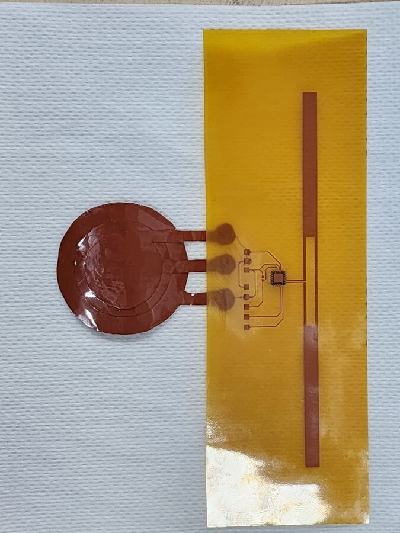

Wireless RFID E-Textile Sensor System
85%
ANSYS HFSSKiCadC++RFID
Designed the antenna and a capacitive proximity sensor called a capaciflector for a non-contact patient respiratory monitoring system. The RFID chip's datasheet only documented standard capacitive sensors, so I worked out the interface from first principles, hand-fabricated the flexible PCB, and validated the complete system wirelessly detecting breathing at 100 cm range.